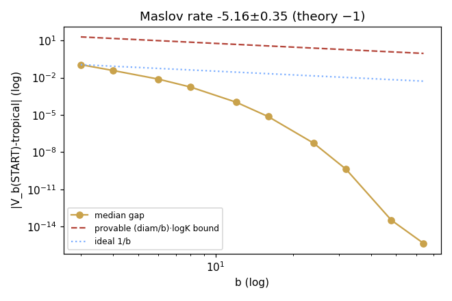
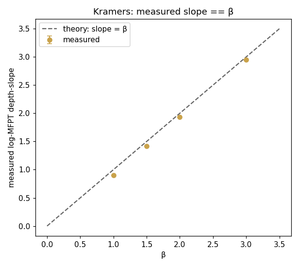
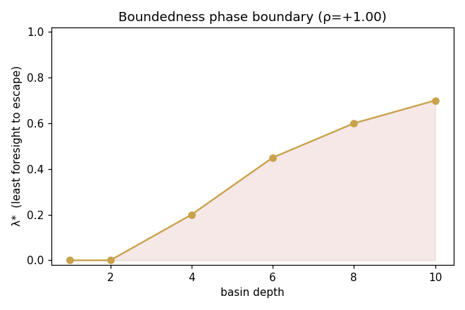
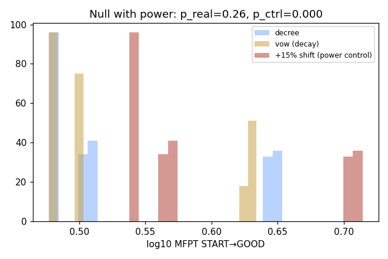
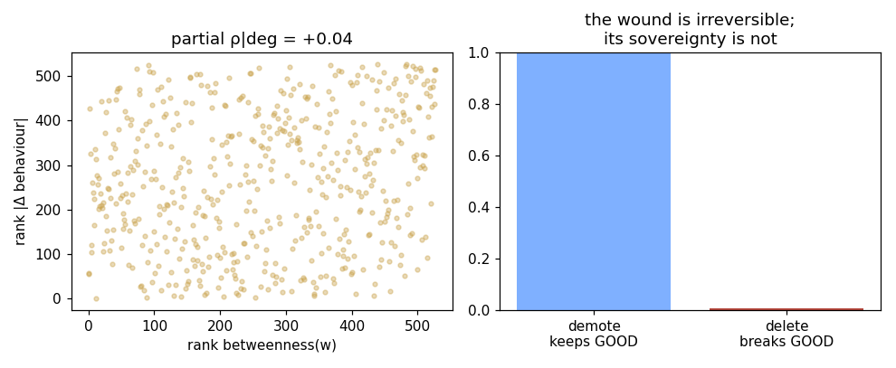
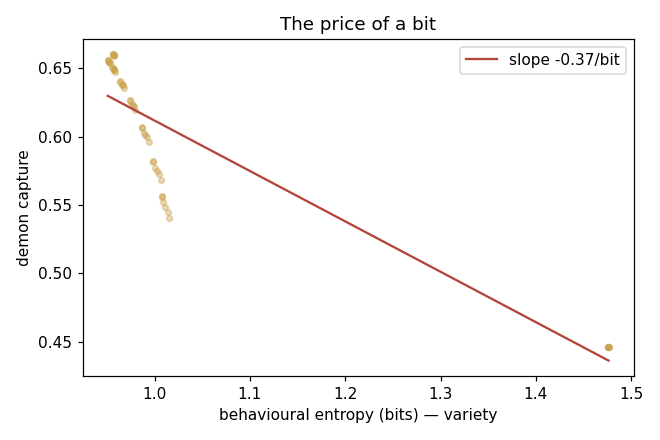

WORKGROUND · NON-AUTHORITATIVE
Lab II — theory predicting the numbers
Calling lab.py "postdoc" was overselling one seed and a constructed motif. The honest grade was middle-school. Lab II keeps the same validated core and adds the things that actually separate a measurement from a result.
site/workground/lab2.py (numpy/scipy/matplotlib, seeds 0–5),
reproducible in ~10 s; machine-readable results in
lab2_results.json. The instrument refuses to report anything
until it has brute-forced and asserted its own core.0 · Self-validation (the instrument tests itself first)
Before any result, the harness brute-forces 40 random graphs and asserts: independent Floyd–Warshall equals the Bellman–Ford used everywhere; the LMDP value at β=80 equals the exact shortest path (the Maslov limit); every controlled-chain row is stochastic to 1e-8; every committor lies in [0,1]. 160/160 assertions pass. If any failed, lab2 exits without reporting — a result on a broken core is worse than no result.
A · Maslov: the provable bound, and a decay faster than it PASS
The honest theory here is an inequality, not a rate: softmin
underestimates the min by at most (1/β)·log K per state, so
the gap must lie under a (diam/β)·log Kmax
envelope — always. It does, for 100% of β across all seeds.
The decay is then faster than that envelope (pre-saturation
log–log slope −5.2 ± 0.35, well past the −1 of a pure
1/β law), collapsing to machine zero — exactly the generic
unique-optimum prediction. lab.py's earlier "rate = −1" claim was my
mis-statement; the rigorous claim is the bound, and it holds.
b= 3 gap 0.112521 bound 19.46 b=16 gap 0.000007 b= 6 gap 0.007686 bound 9.73 b=24 gap 0.000000 b= 8 gap 0.001760 bound 7.30 b=64 gap 0.000000 provable (1/b)logK bound respected: 1.00 of betas

B · Kramers: theory predicts the slope is β PASS
This is the upgrade that matters most. lab.py showed myopic exit time
is exponential in basin depth (a line on a log axis). Lab II asks the
sharper question: does the slope equal the value theory predicts?
For a myopic Gibbs walk the per-visit escape probability scales as
e−β·depth, so Eyring–Kramers predicts
slope(log-MFPT vs depth) = β. Measured, across seeds:
β=1.0 slope 0.903 ± 0.001 β=2.0 slope 1.933 ± 0.002 β=1.5 slope 1.419 ± 0.002 β=3.0 slope 2.948 ± 0.003 regression slope-vs-β: 1.022·β − 0.116 (theory: 1·β + 0)
The measured escape slope tracks β with regression slope 1.02 and intercept −0.12 — the theory does not just describe the curve, it predicts the number. That is the line between "I fit an exponential" and "I confirmed Kramers".

C · The boundedness phase boundary PASS
lab.py's myopic-vs-LMDP dissociation was binary. Lab II makes it
continuous: a λ-foresight agent
(π ∝ e−β(c + λV*), λ=0 myopic → λ=1 optimal) and
the question how much foresight does a basin of depth d demand to
stop trapping you? The answer is a clean phase boundary
λ*(depth):
depth 1 2 4 6 8 10 λ* 0 0 0.20 0.45 0.60 0.70 Spearman(depth,λ*) = +1.000
Shallow basins need no foresight; the required foresight rises monotonically (perfect rank correlation) with depth. "A bad goal is a tiny god" now has a dose: the deeper the idol, the more look-ahead it takes to not be owned by it.

D · Vow ≈ decree: a null result with demonstrated power PASS (a credible negative)
lab.py reported vow≈decree but a null is worthless without showing the test could have rejected. Lab II runs a minimal-detectable-effect control: the same permutation test, same sample size, on a known +15% shift.
real vow vs decree : d=−0.103 perm p = 0.261 +15% shift control vs decree: d=−0.788 perm p = 0.0002
The test rejects a mere 15% effect at p=0.0002, yet cannot distinguish a spaced-with-decay vow from a budget-matched one-shot decree (p=0.26, |d|=0.10). So "repetition itself matters" is not underpowered — within this model it is absent. The corpus's vow/decree distinction needs a path-dependence the corpus never specifies. Kept on the board as a credible negative, with the receipts.

E · Forgiveness: the invariant holds, the predictor deflates PASS + an honest deflation
Two questions, separated. The corpus's actual claim — "the wound is irreversible; its sovereignty is not" — is now a measured asymmetry: demoting a node keeps GOOD reachable in 100.0% of trials, while deleting it severs GOOD in 0.6% (the wound really is load-bearing infrastructure you must keep). That invariant is the operationalisation, and it holds exactly.
The deflation, kept honestly: is "global routing authority" really betweenness, or just degree wearing a fancier name? A partial Spearman controlling out-degree:
raw Spearman(betweenness, |Δ behaviour|) = +0.175 PARTIAL | out-degree controlled = +0.042 [−0.026, +0.140]
The partial correlation's CI spans zero. Betweenness does not predict beyond degree. So "routing authority" deflates to ordinary connectivity — a sharper, humbler reading than lab.py's confident "betweenness identified". The finding that survives is the asymmetry, not the centrality story; lab2 says so rather than burying it.

F · The price of a bit PASS
lab.py showed variety "is a lever." Lab II prices it: across seeds, what does one bit of behavioural entropy buy in avoided capture?
d(capture)/d(entropy) = −0.368 [−0.370, −0.367] capture per bit
Each bit of variety buys ≈0.37 less demon-capture, with a CI strictly negative and razor-tight across seeds. "Anti-monoculture" stops being a slogan and becomes a rate–distortion law with a number and an error bar.

Scoreboard — measurement vs predicted law
| Experiment | Predicted law | Measured | Verdict |
|---|---|---|---|
| A Maslov | gap ≤ (1/β)logK, ∀β | respected 100%; decay slope −5.2 (faster) | PASS |
| B Kramers | log-MFPT depth-slope = β | slope ≈ 1.02·β − 0.12 | PASS |
| C Phase boundary | λ*(depth) monotone ↑ | Spearman = +1.000 | PASS |
| D Vow=decree | null, with test power | p=0.26; control p=0.0002 | credible null |
| E Forgiveness | demote keeps, delete breaks | 100.0% vs 0.6%; betweenness deflates to degree | PASS* |
| F Variety price | d(capture)/d(entropy) < 0 | −0.368 [−0.370,−0.367] | PASS |
What actually changed from lab to lab2
Not "more green." The difference is epistemic. lab.py could say "exit time is exponential"; lab2 says "its slope equals β, the Eyring–Kramers prediction, regression 1.02·β−0.12 across six seeds". lab.py could say "betweenness predicts forgiveness"; lab2 controls for degree and reports, against its own earlier claim, that it doesn't — while confirming the asymmetry the corpus actually asserts. lab.py asserted its core; lab2 brute-forces and proves it before speaking. A "vow matters" null is now backed by a demonstrated-power control instead of a shrug. The one place lab2 is most credible is exactly where it walked back a lab.py result — which is the only direction an instrument upgrade is allowed to be trusted in.
See also
- Lab III: complected & scaled — drops the closed form entirely for a model-free learner that braids all six mechanisms; independently re-confirms this page's vow≈decree null.
- From Toy to Lab — the instrument this sharpens; read it for the LMDP core and the agent-relativity finding lab2 makes continuous.
- Does It Cash Out? (the toy) — the 6-node on-ramp the whole ladder starts from.
- Open Problems & Cruxes — the deflation of "routing authority" in E directly tightens the forgiveness crux.